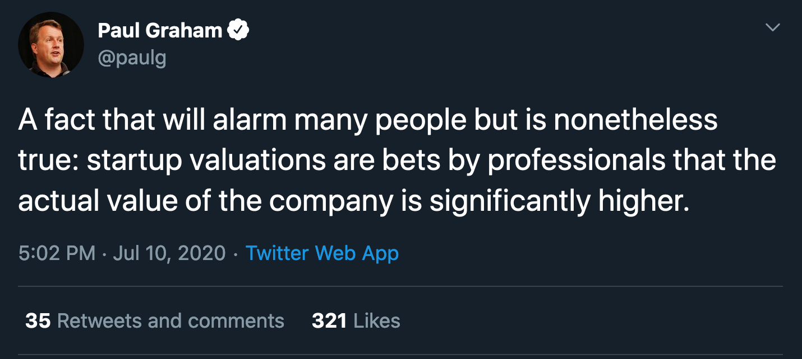

I had a brief run with a startup (literally a month) and was faced with the decision of going into a YC Cohort (W20). In that fiasco, I also spent at least twelve hours trying to convince other people to go. It's been half a year, and I've had a lot more time to reflect on reasons as to why one might want to run a startup. As you might've guessed, I decided not to do it and I genuinely believe that running a startup seems like a bad idea for the majority of people I meet who want to become founders, which seems to be a shocking number of people.
This post definitely will not apply to everyone, but I'd hope there's some valuable thinking in here. Also, note that this is fairly oriented towards technical founders.
Edit: This post also has a very limited scope as it's based off the thinking from my decision to continue interning at Shopify or to go to YC. It's very focused on the Silicon Valley "startup" where you get a VC to give you money and get big in a year, etc etc
Ways Being a Founder is Unexpectedly Bad
Commitment
I'm not talking about commitment to your company. I'm talking about commitment to your cofounder (if you have one, which is likely).
Maybe I'm too young to understand, but marriage seems frightening! My finances, my social life, personal time, and emotional wellbeing would be largely dependent on a single person and that's scary. It should be scary or should at least take a few years for it not to become scary.
Your cofounder is...kind of the same? In a seed-stage it's likely you actually live together, and if you don't, you're likely functionally living together with the amount of work involved. They're responsible for your financial well-being. They may be responsible for the quality of your social lives (most founders spend a lot of time socializing with other tech people + founders). They're tied to your life goals, your dreams, and your passions.
My impression was that my relationship with my cofounder would be more intense than marriage, and extra bad in the event of failure since there's additional loss (and it's statistically likely, but I guess so is marriage). I totally believe that there are cofounder pairs that are completely ready to go through the founder journey and pairs that maybe weren't ready but were fine anyway, but I stand by the statement that it's more intense than marriage and not enough people put care into this.
Your VC is Not the One at Risk Here
I often hear sentiments that resemble "wow these VCs are taking a chance on me I better commit to this!".
VCs are not evil people trying to take advantage of you (actually they might be, but let's assume they're not), but they are not the ones at risk. For them, 150k or a few million is not a huge risk. Seed-stage returns will be from a very small percentage of investments, thus VCs can afford to have comically high error rates as long as they get the few that matter. If you're SoftBank you can do even worse and still have so much money! They make decisions carefully, they care about your success for various reasons, and are generally caring people (in most of my experiences) but in larger abstractions, your startup means nothing to them.
They're not shy about it either, the entire reason they're investing in you is because they think you're more valuable than you cost. 
Your risk is years of your life, blood, sweat, and tears. The next few years (provided your startup lasts till then) will somewhat be in service to these VCs. The VCs are your "bosses" as you answer to them (though much less than a regular "boss") and to the ones you hope to raise capital from in the future.
It's good to take a risk with increased confidence because qualified people think you have promise. However, that can morph into "I'm going to work on this startup partially in service to these people who believed in me and gave me lots of money". These additional stresses that come from meeting VC expectations and the complications of the dynamics of that relationship get pretty stressful.
Sense of Self
This one is the one that got to me most but I can see it being irrelevant to a lot of other people.
Many founders have big egos -- I don't mean they're assholes or overly self-important but they do have very powerful confidence, because that's a valuable skill to have as a founder. Not just confidence in pitching their project to others, but in their vision and their company. They need to believe their company will be successful (though I have met founders who just want to party with VC money for a few years cough cough Neumann).
My first fear was that I created an ego for myself rapidly. Practicing to sell to clients and for your YC interview involves repeating to yourself why you are good and self-hypnosis is fairly powerful. I love feeling good about myself, but I suddenly found myself feeling more confident in myself than what I believed was warranted. More frighteningly, I had a major character and energy change in a couple of weeks. Losing so much of my identity like that was unnerving, not to mention the ripple effects that could've occurred in my social life (they had already some what started but were revertable).
The other fear is coming down from that. Startup founders (especially the more eccentric ones) sometimes believe that they will build something that will change the world. Along with that, their identities start to merge with their company. There's nothing wrong with that, but I also think it's exceptionally tragic to come down from that. It's not just dealing with failure and getting back up on your feet, it's losing a part of your identity.
School is Generally a Good Idea (for prospective dropouts)
Being a good engineer seems underrated for being a good startup founder. Not just being able to code fast, but being able to make good engineering decisions, conduct good technical interviews and attract talent. Some engineering skills can't be worked around with "I am very smart and can learn fast" and require extended time and practice. With that, I also think prospective founders also overestimate the amount of learning on the job that can be done on the engineering side, mostly because there will just be much less technical work. It's true that founders will learn more than they will in school or industry, but the technical development may not be as strong. My model is that the best schooling experience is better technical education than the best founding experience.
Common reasons why people want to be founders and how to get those features elsewhere
Something to Own
Lots of huge, ground-breaking products have been lead from within a large company. Examples include email client hey.com, Chromebooks, and countless amazing dev tools.
Starting these things in a large company has the benefit of security, resources and recruiting already done for you. Downsides include beaurocracy, not being able to recruit on your own accord and dealing with PR policy. There is also high barriers to starting something within a company, like being senior enough to do so and being at the right company at the right time.
The alternative is starting a project on the side. Ziglang was started as a side project and is now a very promising programming language. The creator has since then left his job to work on Zig, but it is also possible to "own" something significant without even having to leave your job. Examples includes Julia Evan's blog (not actually a work-side-project) and line of zines, Cassidy William's keycap line, Nick Frosst's successful and awesome band and many more. I understand that it's not the extent of "oh yeah Google? I built that", but I think the expected value is much higher in creating and owning something that isn't a startup.
Getting Rich
A lot of people claim that startups are less money, but I find for signicant number of founders, that's not true -- not because they'll definitely have a good exit, but because they're skilled in ways that allow them to raise enough money to pay themselves like they would at a big company. If that applies to you, then going to a startup probably is your best shot at getting rich! For other people, the expected value of industry (particularly joining a well-funded early-stage startup) is usually higher.
Not Being at School (for prospective dropouts)
This seems like a valid reasons for the average CS student. School is a place where you answer to professors who don't always understand industry and do homework assignments that no one will care about. However, it seems like all of these problems can be significantly if not fully solved by building a better school experience for yourself.
A better program can improve many things, such as Olin College of Engineering that has a project-based curriculum, Make School that is a two year applied-engineering degree program or Dev Degree, where you can work at Shopify and take more applied courses taught by Shopify throughout your degree. These programs are small and selective, but probably not harder than a semi-successful startup. Dev Degree also happens to be more financially sound, with Shopify paying for your tuition and a salary, and Make School tuition is 70k for the entire degree. Olin is actually expensive so a better program may actually be financially unviable for potential startup founders.
Another alternative is to just be worse at school and learn on the side and/or to morph your silly school assignments into productive skills and useful outputs. The Coconut Programming Language was built by someone while they were in school. Some things like dynamic programming that are often deemed useless theoretical things can have industry applications. People have also taken mundane school projects like this compiler that almost every school will have you build in a compilers course and end up with educational findings for engineers in general (also see HackerNews thread). In five weeks, my friend Maas was able to launch five relatively successful products while enrolled in Dev Degree.
School is already a powerful environment of hardwork, fun and learning. I think it is a more cohesive enviromnment than the startup world. It is fully possible to build useful software and learn "useful" skills while at school. There are also a bunch of other reasons why not to drop out of school and why school is fun, though those have been argued by those more qualified than me.
Freedom to work on what you want
I covered this a bit in previous sections, but prospective founders (and people and general) tend not to like industry jobs because they don't always get the pick the most interesting things to do and have a limited selection to begin with.
Finding a perfect job that lets you do everything you want is pretty hard, but I also think that the free-est industry job is much more free than running a startup, unless answering to shareholders, dealing with recruiting, management and paperwork are things you find interesting. I couldn't find many accounts of people with jobs like this, but I know a few personally so I'll describe.
- Shopify has a team that is dedicated to shorter projects that are created and selected by the team and not demands that are sent from executives.
- My own team at Shopify (we worked on TruffleRuby) was experimental by nature and thus there was a lot of free reign to try things that are the most interesting. Furthermore, Shopify gave me a lot of room to work on + publish blog posts and go to conferences.
- Freelance engineers who get to pick their projects and then do them on their own accord. There are also a lot of full-time open source maintainers.
- Research jobs or doing a graduate degree where almost anything can go!
Fame and Recognition
I really debated this section since I haven't met a founder who was like "oh I'm doing this so I can be famous and recognized for my talents". However, I think it's a strong desire that rightfully manifests healthily in a lot of founders. I don't think I need to give examples for profilic individual contributors, but I also understand that there are less of them than prolific founders. This one is hard to replicate elsewhere though you can certainly get very close.
Ambition
I think this is the one that confuses me the most when people want to become founders. Phrases like "I want to do better than just being another engineer" don't really seem to be about ambition.
To be ambitious often means things like wanting to do a Ph.D, become a medical doctor or an astronaut. On that scale, it's not really about being better at something you're doing (though it partially is), but joining a new game where it's supposedly harder. I believe that running a successful startup is indeed harder than being a good engineer and is more ambitious on that axis. However, I think the games are close enough that ambition can easily be matched without changing the game. Setting goals like working at a certain company, promotions (up to positions like CTO) and leading a successful product at a company aren't strictly less ambitious than building a successful startup.
Enjoying risk, Passion about a very specific product/service that can only be done at a startup
Anyway to summarize here's a list of reasons I think are particularly convincing for people who want to start a company:
- They want to build something that can't be built in any other place. This should be more like "this thing has been bothering me forever and I need to fix it" and less "let's go find something to fix".
- Money, fame+recognition
- Enjoyment of risk (note that this is somewhat distinct from being adventurous)
These reasons don't really manifest on their own so it's hard to evaluate, as I'm pretty certain all people feel the first point to some extent.
All this to say, I'm scared that people are too eager to run a startup because it's glorified and seems virtuous (brave, hardworking, ambitious, smart, unique) when it's secretly not-that-great.